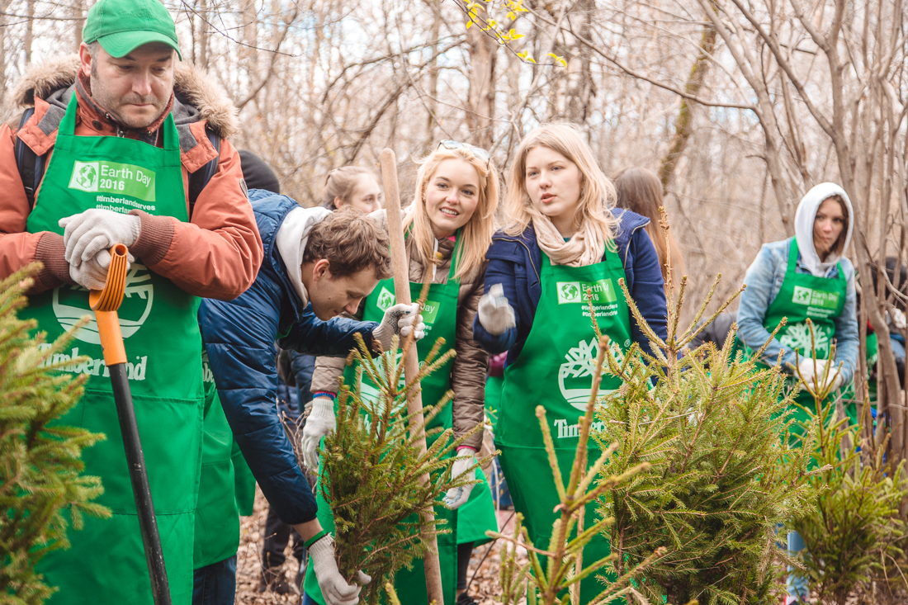

| Главная | Контакты | О нас | Волонтёры |
|---|
Стать волонтёром |
Приглашаем Вас в наши дружные ряды! |
Форум поможет ответить на все ваши вопросы, вы всегда будете в курсе всех событий из жизни организации.
|
 Как стать волонтёром?Прежде всего,необходимо узнать кто такой"волонтёр".Это тот,кто действует по свободной воле.Сам захотел,и сам выбрал,что делать.Ресурс волонтёра-его личное время,его личныесилы,умения и навыки. |  Выбор организацииЕсть формальные признаки: уставные документы, сайт, команда, описание что и где делают, карта и календарь событий (ложится ли он на Ваш рабочий график), внутренние правила, наличие обучения и поддержки, командная работа. |
|---|---|
 Волонтер помогает только трудом!Волонтер помогает только трудом! Помните! Волонтерство — это вазимный договор. Вазимное решение и признание прав и обязанностей |
Готовься сам задавать вопросы!Что Вам важно знать? Что вы не нашли на сайте? Что вас смутило? Не забудьте спросить кто и с какими полномочиями над Вами старший? Узнайте что делать в случае возникших проблем |
НовостиВся информация о социальном волонтерстве в России |
|
|---|---|
Помогаем детям вместеДата публикации: 15.11.2020 |
 |
| Стать волонтером может любой, профессия и взгляды на мир не имеют значения |
Социальные сети:
Вконтакте Инстаграмм Одноклассники |
© Разработка сайта. Sizov Nikita, 2021 |
|---|